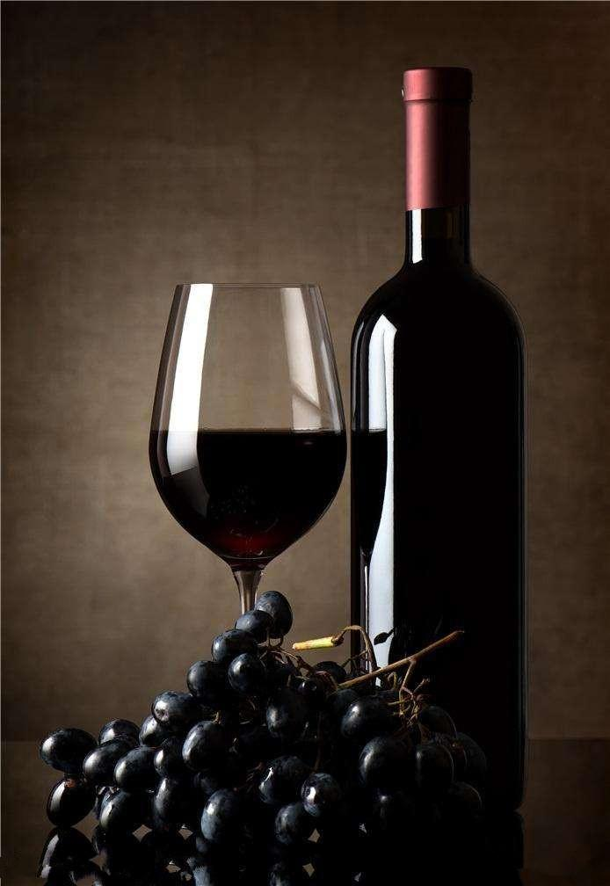

品尝前通常要将葡萄酒转换至另一容器，作用除了将酒与酒瓶中所产生的沉淀物分离之外，还有一个重要的原因就是让酒进行“呼吸”。因为一瓶经过长期贮存的红酒在饮用前，为了更好的将它的特色发挥出来，让它与空气接触是必不可少的一道程序；就象长期处于黑暗中的人初见阳光是有个适应过程一样。
一般葡萄酒的呼吸时间根据酒的特征从0.5到2小时不等。
另外，像新鲜的葡萄酒一般则无需做转换容器，但在饮用前打开瓶口让其呼吸一段时间仍必不可少。
葡萄酒根据产品特征的不同，他们的最佳饮用温度也有所区别。为了让葡萄酒充分展示其特色，给品尝者带来最大程度的乐趣；在侍酒时要注意酒的温度。
以下是各种酒大致的适宜温度：
丰厚的红酒(长时间贮藏) 15-20摄氏度
清淡的红葡萄酒(新鲜饮用) 12摄氏度左右
干白葡萄酒和桃红葡萄酒 10-12摄氏度
甜白葡萄酒、甜玫瑰红葡萄酒、香槟以及其它起泡酒5摄氏度左右
